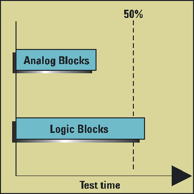
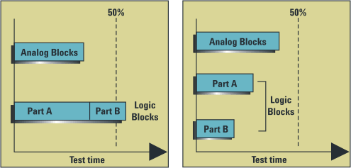

Example of a device with a subdivided core test
The test time for a single IP core might be comparable to that of an analog core, but still greater than 50% of the total test time. This case, shown in the first figure below, can be improved by subdividing the IP core test for the logic blocks into two separate parts, increasing the effectiveness of a CCT.

The core tests can be separated provided that each IP core division (Part A and Part B, shown in the figure below) can be defined as a separate port that can then be tested concurrently.
After subdividing the logic core, the analog core test time dominates-a favorable situation for concurrent test development.

Functional changes
- Introduced before SmarTest 6.3.2